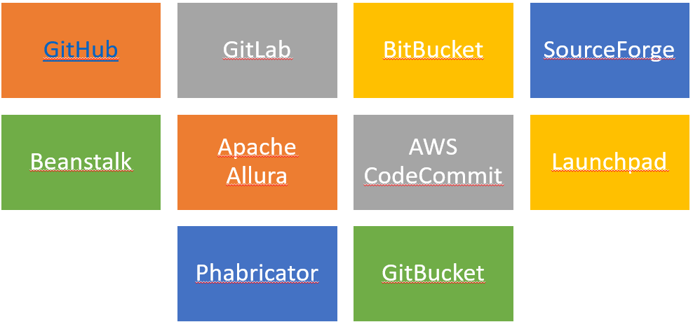
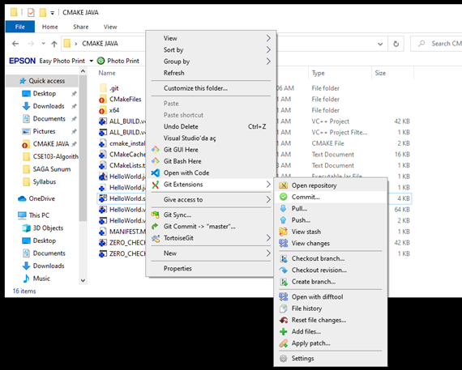
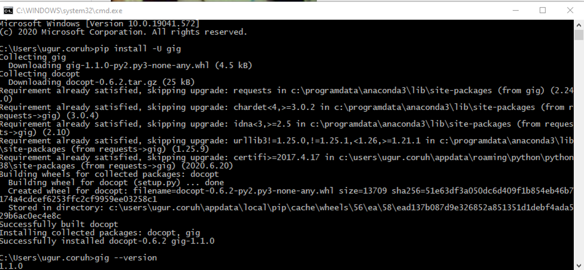
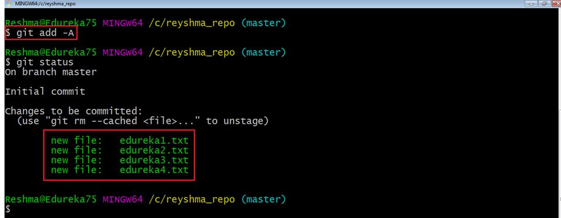
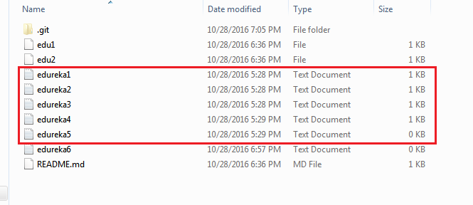
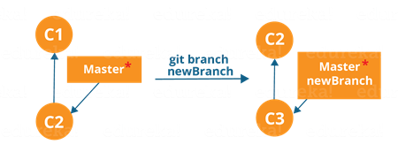
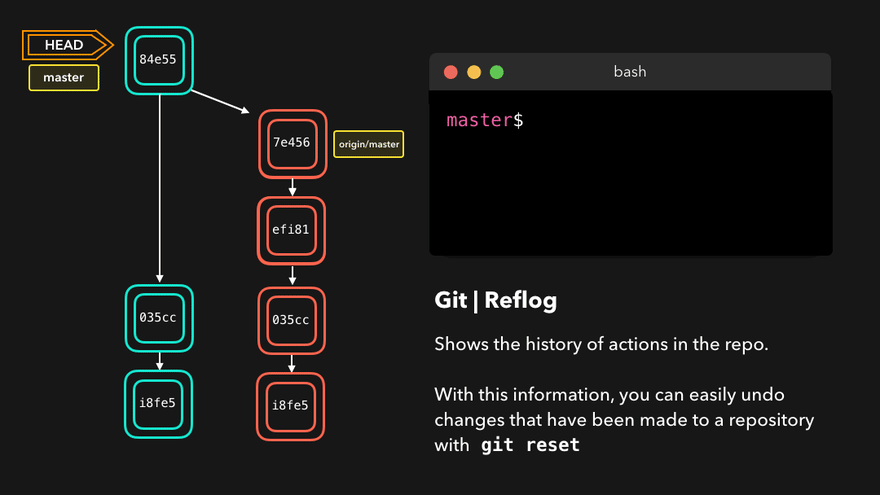
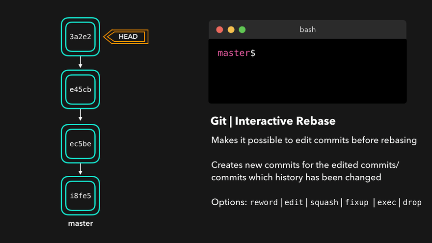
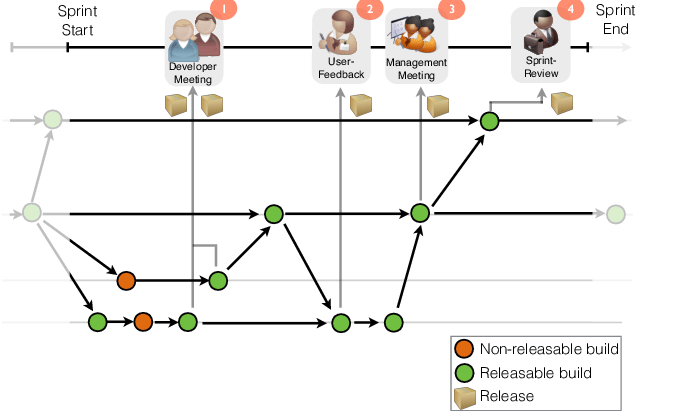

CE103 Algorithms and Programming I¶
Week-3¶
Introduction to Source Code Version Management Systems¶
Outline¶
- Introduction to Source Code Version Management Systems
- Features of Source Code Management Systems
- Why Do We Need Source Code Management Systems
- Centralized/Distrubuted Version Control Systems
- Introduction to Git
- Git Installation and Configuration
Outline¶
- Git Init Repository
- Git Add Files
- Git Commit Changes
- Git Pull/Fetch Changes from Remote Repo
- Git Push Local Changes to Remote Repo
- Git Branching
- Git Merging and Conflict Solving
- Git Rebasing
- Git Reset
- Git Logs and Monitoring
- Git Decision Tree
- Git Visualize Logs
Introduction to Source Code Version Management Systems¶
Git, Github, Gitlab, Bitbucket, Maven, SVN, TFS¶
Source code management (SCM) is used to track modifications to a source code repository. SCM tracks a running history of changes to a code base and helps resolve conflicts when merging updates from multiple contributors. SCM is also synonymous with Version control. As software projects grow in lines of code and contributor head count, the costs of communication overhead and management complexity also grow. SCM is a critical tool to alleviate the organizational strain of growing development costs.
Features of Source Code Management Systems¶
-
Authenticated access for commits
-
Revision history on files
-
Atomic commits of multiple files
-
Versioning/Tagging
Why Do We Need Source Code Management Systems? (1)¶
We can save the file with a different name if it’s our school project or one-time papers but for a well-equipped software development? Not a chance.
Why Do We Need Source Code Management Systems? (2)¶
Big projects need a version control system to track the changes and avoid misunderstanding. A good SCM does the following:
- Backup and Restore
- Synchronization
- Short-Term Undo
- Long-Term Undo
- Track Changes
- Ownership
- Branching and Merging
Why Do We Need Source Code Management Systems? (3)¶
Backup and Restore – Files can be saved at any moment and can be restored from the last saved.
Why Do We Need Source Code Management Systems? (4)¶
Synchronization – Programmers can get the latest code and fetch the up-to-date codes from the repository.
Why Do We Need Source Code Management Systems? (5)¶
Short-Term Undo – Working with a file and messed it up. We can do a short-term undo to the last known version.
Why Do We Need Source Code Management Systems? (6)¶
Long-Term Undo – It helps when we have to make a release version rollback. Something like going to the last version which was created a year
Why Do We Need Source Code Management Systems? (7)¶
Track Changes– We can track the changes as when anyone is making any change, he can leave a commit message as for why the change was done.
Why Do We Need Source Code Management Systems? (8)¶
Ownership– With every commit made to the master branch, it will ask the owner permission to merge it.
Why Do We Need Source Code Management Systems? (9)¶
Branching and Merging – You can create a branch of your source code and create the changes. Once the changes are approved, you can merge it with the master branch.
Why Do We Need Source Code Management Systems? (10)¶
Types of Version Control Systems¶
- Centralized Version Control (TFS, Subversion)
- Distributed Version Control (Git and Mercurial)
Centralized Version Control (TFS, Subversion) (1)¶
The main concept of Centralized Version Control is that it works in a client and server relationship. The repository is located in one place and allows access to multiple clients.
Centralized Version Control (TFS, Subversion) (2)¶

Centralized Version Control (TFS, Subversion) (3)¶

Centralized Version Control (TFS, Subversion) (4)¶
It’s very similar to FTP where you have FTP clients which connect to FTP server. Here all the user changes and commits have to pass through the central server. For Ex: Subversion.
Centralized Version Control (TFS, Subversion) (5)¶
The benefits of centralized version control are:
-
It’s easy to understand.
-
There are more GUI and IDE clients.
-
You have more control over the users and access.
Centralized Version Control (TFS, Subversion) (6)¶
We do have drawbacks also:
-
It is dependent on the access to the server.
-
It can be slower because every command from the client has to pass the server.
-
Branching and merging strategies are difficult to use.
Distributed Version Control (Git and Mercurial) (1)¶
These systems are newer to use. In Distributed Version Control, each user has their own copy of the entire repository as well as the files and history. For Ex: Git and Mercurial
Distributed Version Control (Git and Mercurial) (2)¶

Distributed Version Control (Git and Mercurial) (3)¶

Distributed Version Control (Git and Mercurial) (4)¶
The benefits of distributed version control are:
-
More powerful and easy change tracking.
-
No need of a centralized server. Most of the functionalities work in offline mode also apart from sharing the repositories.
-
Branching and Merging strategies are more easy and reliable.
-
It’s faster than the other one.
List of Source Code Version Management Tools (1)¶

List of Source Code Version Management Tools (2)¶
-
Github
-
GitLab
-
BitBucket
-
SourceForge
-
Beanstalk
List of Source Code Version Management Tools (3)¶
-
Apache Allura
-
AWS CodeCommit
-
Launchpad
-
Phabricator
-
GitBucket
GIT (Distributed Source Code Management) (1)¶
GIT (Distributed Source Code Management) (2)¶

GIT (Distributed Source Code Management) (3)¶

GIT (Distributed Source Code Management) (4)¶

GIT (Distributed Source Code Management) (5)¶
A Basic Overview of How Git Works (1)¶
-
Create a "repository" (project) with a git hosting tool (like Bitbucket)
-
Copy (or clone) the repository to your local machine
-
Add a file to your local repo and “commit” (save) the changes
-
“Push” your changes to your master branch
GIT (Distributed Source Code Management) (6)¶
A Basic Overview of How Git Works (2)¶
-
Make a change to your file with a git hosting tool and commit
-
“Pull” the changes to your local machine
-
Create a “branch” (version), make a change, commit the change
-
Open a “pull request”.
-
“Merge” your branch to the master branch
GIT (Distributed Source Code Management) (7)¶
Some of The Basic Operations in GIT are¶
-
Initialize
-
Add
-
Commit
-
Pull
-
Push
GIT (Distributed Source Code Management) (8)¶
Some of The Basic Operations in GIT are¶

GIT (Distributed Source Code Management) (9)¶
Some of The Basic Operations in GIT are¶
-
Branching
-
Merging
-
Rebasing
GIT (Distributed Source Code Management) (10)¶
Some of The Basic Operations in GIT are¶

GIT (Distributed Source Code Management) (8)¶
A brief idea about how these operations work with the Git repositories (1)¶

GIT (Distributed Source Code Management) (9)¶
A brief idea about how these operations work with the Git repositories (2)¶

GIT (Distributed Source Code Management) (10)¶
A brief idea about how these operations work with the Git repositories (3)¶
For more detailed cheetsheat please check the following interactive map
NDP Software :: Git Cheatsheet

Installation of GIT (1)¶
Check Installation Already Completed

Installation of GIT (2)¶
If your console gives error about git command follow the steps in the link
Install Git | Atlassian Git Tutorial
In this link you will should download following setup according to your operating system
Installation of GIT (3)¶
GIT Setup Files¶
Installation of GIT (4)¶
- Download and install GIT from the following links (both have same github release path)
Installation of GIT (5)¶
- After running setup follow the steps below
Installation of GIT (6)¶
- Select the following configurations
Installation of GIT (7)¶
- You can select to use git from Git Bash Only, Also you can use it from command-line by selecting second option. Third option override some Windows executable so your operating system can be affected from this selection.

Installation of GIT (8)¶
- Git Credential Manager will be use to configure your remote connection.

Installation of GIT (9)¶

Installation of GIT (10)¶
- MSYS2 MinTTY provide better visual and colorful console outputs

Installation of GIT Extension (Windows) (1)¶
-
Git user interface can be installed by the following applications
-
You can install Git GUI from https://git-scm.com/downloads/guis
- I prefer to use git extension https://gitextensions.github.io/
-
and https://tortoisegit.org/ together
-
Also Download KDiff3 KDiff3 - Browse Files at SourceForge.net
-
These extensions provide GUI for git operations to make process easier.
Enter GIT Extension Configurations¶
Right click to any where on right click menu you will see git extension settings as follow

Configuration of GIT Extension (Windows) (1)¶
- Git extension provides you missing setups or wrong configurations. If everyting is green that mean everything should work perfectly.

Configuration of GIT Extension (Windows) (2)¶
- If you install git everything should be green and this configuration is stored on .gitconfig on your home
C:/Windows/Users/<user>/.gitconfig
Configuration of GIT Extension (Windows) (3)¶
- You can use the following template and fix your settings. Git GUI edit this settings. But you can also edit them manually.
Configuration of GIT Extension (Windows) (3)¶
C:/Windows/Users/
[core]
editor = \"C:/Program Files (x86)/GitExtensions/GitExtensions.exe\" fileeditor
autocrlf = true
quotePath = false
commitGraph = true
longpaths = true
[user]
email = xxxxxxx@gmail.com
name = xxxx xxxxxx
[filter "lfs"]
clean = git-lfs clean -- %f
smudge = git-lfs smudge -- %f
process = git-lfs filter-process
required = true
[pull]
rebase = false
[fetch]
prune = false
[rebase]
autoStash = false
[credential]
helper = manager
[diff]
guitool = kdiff3
[difftool "kdiff3"]
path = C:/Program Files/KDiff3/kdiff3.exe
cmd = \"C:/Program Files/KDiff3/kdiff3.exe\" \"$LOCAL\" \"$REMOTE\"
[merge]
guitool = tortoisemerge
[mergetool "tortoisemerge"]
path = C:/Program Files/TortoiseGit/bin/TortoiseGitMerge.exe
cmd = \"C:/Program Files/TortoiseGit/bin/TortoiseGitMerge.exe\" -base:\"$BASE\" -mine:\"$LOCAL\" -theirs:\"$REMOTE\" -merged:\"$MERGED\"
[receive]
advertisePushOptions = true
[gc]
writeCommitGraph = true
Configuration of GIT Extension (Windows) (4)¶
- Also in extension you can see similar settings

Configuration of GIT Extension (Windows) (5)¶
Samples
MergeTool
Path to mergetool
Mergetool command
"C:/Program Files/TortoiseGit/bin/TortoiseGitMerge.exe" -base:"$BASE" -mine:"$LOCAL" -theirs:"$REMOTE" -merged:"$MERGED"
Configuration of GIT Extension (Windows) (6)¶
Difftool
Path to difftool
Difftool command
Configuration of GIT Extension (Windows) (7)¶
-
If you see something as merge and diff tool is not configured, follow the similar settings above on your computer. If you installed kdiff3, tortoisegit and extension you will have same diff and merge tools
-
This topic also help you
-
Git: How can I configure KDiff3 as a merge tool and diff tool? - Stack Overflow
Configuration of GIT Extension (Windows) (8)¶
- Merge, Diff and Shell Tool Configuration Missing.
Configuration of GIT Extension (Windows) (9)¶
- Open Git->Config, in your settings you will see path to mergetool and difftool will be empty fill settings like that below find executables in your computer and copy paths to here.
Configuration of GIT Extension (Windows) (10)¶
Configuration of GIT Extension (Windows) (11)¶
- Also if we want to change and use different diff and merge tool then we can do this with gitbash console as below
- Find TortoiseGitIDiff.exe and TortoiseGitMerge.exe

Configuration of GIT Extension (Windows) (12)¶
- Copy path of this applications
C:\Program Files\TortoiseGit\bin\TortoiseGitMerge.exe
C:\Program Files\TortoiseGit\bin\TortoiseGitIDiff.exe
Configuration of GIT Extension (Windows) (13)¶
- Open a gitbash console and run following commands
git config --global merge.tool TortoiseGitMerge
git config --global mergetool.TortoiseGitMerge.path "C:/Program Files/TortoiseGit/bin/TortoiseGitMerge.exe"
git config --global mergetool.TortoiseGitMerge.trustExitCode false
git config --global diff.guitool TortoiseGitIDiff
git config --global difftool.TortoiseGitIDiff.path "C:/Program Files/TortoiseGit/bin/TortoiseGitIDiff.exe"
git config --global difftool.TortoiseGitIDiff.trustExitCode false
This updates will be stored on .gitconfig
Using the GIT Extension (1)¶
right click in the git folder and use Git Extension menu for operations.
for sample commit click "Commit"

Using the GIT Extension (1)¶
from opening window first stage related files and then write a good commit message
finally click commit to local. You can also commit&push it to remote repository.

GIT Installation Completed..¶


Installation of gig (git ignore creator) (1)¶
Requirements
-
Python >= 3.6
-
Internet connection
Installation of gig (git ignore creator) (2)¶

Installation of gig (git ignore creator) (3)¶
Usage of gig (1)¶
List all gitignore templates
Usage of gig (2)¶
Sample gitignore for C Java and Visual Studio
Usage of gig (3)¶
There is a portal for this also by Toptal
•gitignore.io - Create Useful .gitignore Files For Your Project

Usage of gig (4)¶
for samples you can check the following links.
https://github.com/github/gitignore
https://dev.to/shihanng/gig-a-gitignore-generator-opc
Configuration of GIT (1)¶
It is important to configure your Git because any commits that you make are associated with your configuration details.
configuring Git with your username and email. In order to do that, type the following commands in your Git Bash:
Configuration of GIT (2)¶

Configuration of GIT (3)¶
git configuration files are located on the user folder

Configuration of GIT (4)¶
If you want to view all your configuration details, use the command below
Using .gitignore files with git-extension (1)¶
with gitignore file

Using .gitignore files with git-extension (2)¶
without gitignore file (just move to another location)

Github Create Repo¶

Initilization of Repo (not existing in github)¶
git init¶
-
In order to do that, we use the command git init.
-
git init creates an empty Git repository or re-initializes an existing one. It basically creates a .git directory with sub directories and template files. Running a git init in an existing repository will not overwrite things that are already there. It rather picks up the newly added templates.
git init¶

Adding Initiated Repo Remote Upstream Repo (Link with Github Repo) (1)¶
- If you enter following command in the git folder you will see nothing
- That mean this repository do not have a remote upstream repository such as a github or bitbucket repo.
Adding Initiated Repo Remote Upstream Repo (Link with Github Repo) (2)¶
Open the github and bitbucket repository and copy project path from

Adding Initiated Repo Remote Upstream Repo (Link with Github Repo) (3)¶
you will see the following sample from github code button
Adding Initiated Repo Remote Upstream Repo (Link with Github Repo) (4)¶
- Copy link and use with following command
- Then verify that you correctly updated remote repository setting with the following command
origin https://github.com/ucoruh/ce103-sample-text.git (fetch)
origin https://github.com/ucoruh/ce103-sample-text.git (push)
You can check the following sample How to Add a New Remote to your Git Repo | Assembla Help Center
Now you can push your local changes to remote repository¶
If you see a repository on Github then you can download with following operation¶
Checkout a Repository (1)¶
create a working copy of a local repository by running the command
Checkout a Repository (2)¶
Sample clone command
Checkout a Repository (3)¶
when using a remote server, your command will be
Checking Repository Status (1)¶
git status¶
The git status command lists all the modified files which are ready to be added to the local repository.
Checking Repository Status (2)¶
git status¶

Adding Files to Index (1)¶
git add¶
This command updates the index using the current content found in the working tree and then prepares the content in the staging area for the next commit.
Adding Files to Index (1)¶
git add¶
Created two more files edureka3.txt and edureka4.txt. Let us add the files using the command git add -A. This command will add all the files to the index which are in the directory but not updated in the index yet.

Commit Changes (1)¶
git commit¶
- It refers to recording snapshots of the repository at a given time. Committed snapshots will never change unless done explicitly.
Commit Changes (2)¶
git commit¶
- Let me explain how commit works with the diagram below

- Here, C1 is the initial commit, i.e. the snapshot of the first change from which another snapshot is created with changes named C2. Note that the master points to the latest commit. Now, when I commit again, another snapshot C3 is created and now the master points to C3 instead of C2.
Commit Changes (3)¶
git commit¶
- Commands:

- Now, if you want to commit a snapshot of all the changes in the working directory at once, you can use the command below
Commit Changes (4)¶
git commit¶
- Please check writing good commit messages article below
- How to write a good commit message - DEV Community
Writing Good Commit Messages (1)¶
Writing Good Commit Messages (2)¶
1. Type¶
- feat - a new feature
- fix - a bug fix
- docs - changes in documentation
- style - everything related to styling
- refactor - code changes that neither fixes a bug or adds a feature
- test - everything related to testing
- chore - updating build tasks, package manager configs, etc
Writing Good Commit Messages (3)¶
2. Subject¶
This contains a short description of the changes made. It shouldn't be greater than 50 characters, should begin with a capital letter and written in the imperative eg. Add instead of Added or Adds.
Writing Good Commit Messages (4)¶
3. Body¶
The body is used to explain what changes you made and why you made them. Not all commits are complex enough that they need a body, especially if you are working on a personal project alone, and as such writing a body is optional.
A blank line between the body and the subject is required and each line should have no more than 72 characters.
Writing Good Commit Messages (5)¶
4.Footer¶
The footer is also optional and mainly used when you are using an issue tracker to reference the issue ID.
Writing Good Commit Messages (6)¶
Example Commit Message¶
feat: Summarize changes in around 50 characters or less
More detailed explanatory text, if necessary. Wrap it to about 72
characters or so. In some contexts, the first line is treated as the
subject of the commit and the rest of the text as the body. The
blank line separating the summary from the body is critical (unless
you omit the body entirely); various tools like `log`, `shortlog`
and `rebase` can get confused if you run the two together.
Explain the problem that this commit is solving. Focus on why you
are making this change as opposed to how (the code explains that).
Are there side effects or other unintuitive consequences of this
change? Here's the place to explain them.
Further paragraphs come after blank lines.
- Bullet points are okay, too
- Typically a hyphen or asterisk is used for the bullet, preceded
by a single space, with blank lines in between, but conventions
vary here
If you use an issue tracker, put references to them at the bottom,
like this:
Resolves: #123
See also: #456, #789
Writing Good Commit Messages (7)¶
- You can edit last commit with the following command
Writing Good Commit Messages (7)¶
- Edit last commit output

Add Files to Index (1)¶
I have created two more text files in my working directory viz. edureka5.txt and edureka6.txt but they are not added to the index yet.
I am adding edureka5.txt using the command
Add Files to Index (2)¶

Add Files to Index (3)¶
I have added edureka5.txt to the index explicitly but not edureka6.txt and made changes in the previous files. I want to commit all changes in the directory at once.
Add Files to Index (4)¶
This command will commit a snapshot of all changes in the working directory but only includes modifications to tracked files i.e. the files that have been added with git add at some point in their history. Hence, edureka6.txt was not committed because it was not added to the index yet. But changes in all previous files present in the repository were committed, i.e. edureka1.txt, edureka2.txt, edureka3.txt, edureka4.txt and edureka5.txt. Now I have made my desired commits in my local repository
Add Files to Index (5)¶
your local repository consists of three "trees" maintained by git. the first one is your Working Directory which holds the actual files. the second one is the Index which acts as a staging area and finally the HEAD which points to the last commit you've made
Add Files to Index (6)¶

Update local repo before sending (1)¶
Fetching¶
If we have a remote Git branch, for example a branch on Github, it can happen that the remote branch has commits that the current branch doesn't have! Maybe another branch got merged, your colleague pushed a quick fix, and so on.
Update local repo before sending (2)¶
Fetching¶
We can get these changes locally, by performing a git fetch on the remote branch! It doesn't affect your local branch in any way: a fetch simply downloads new data.
Update local repo before sending (3)¶
Fetching¶

Update local repo before sending (4)¶
Fetching¶
We can now see all the changes that have been made since we last pushed! We can decide what we want to do with the new data now that we have it locally.
Update local repo before sending (5)¶
Pulling¶
Although a git fetch is very useful in order to get the remote information of a branch, we can also perform a git pull. A git pull is actually two commands in one: a git fetch, and a git merge. When we're pulling changes from the origin, we're first fetching all the data like we did with a git fetch, after which the latest changes are automatically merged into the local branch
Update local repo before sending (6)¶
Pulling¶

Update local repo before sending (7)¶
Pulling¶
Awesome, we're now perfectly in sync with the remote branch and have all the latest changes!
Update local repo before sending (8)¶
Pulling¶
git pull¶
Note that before you affect changes to the central repository you should always pull changes from the central repository to your local repository to get updated with the work of all the collaborators that have been contributing in the central repository. For that we will use the pull command.
Update local repo before sending (9)¶
Pulling¶
git pull¶
But first, you need to set your central repository as origin using the command
Update local repo before sending (10)¶
Pulling / git pull¶

Now that my origin is set
Update local repo before sending (11)¶
Pulling / git pull¶
let us extract files from the origin using pull. For that use the command
Update local repo before sending (12)¶
Pulling / git pull¶

This command will copy all the files from the master branch of remote repository to your local repository.
Update local repo before sending (13)¶
Pulling / git pull¶
Since my local repository was already updated with files from master branch, hence the message is Already up-to-date. Refer to the screen shot above
Update local repo before sending (14)¶
Pulling / git pull¶
One can also try pulling files from a different branch using the following command:
Update local repo before sending (15)¶
Pulling / git pull¶
Your local Git repository is now updated with all the recent changes. It is time you make changes in the central repository by using the push command.
Send Changes to Remote Repo (1)¶
git push¶
- This command transfers commits from your local repository to your remote repository. It is the opposite of pull operation.
Send Changes to Remote Repo (2)¶
git push¶
- Pulling imports commits to local repositories whereas pushing exports commits to the remote repositories
Send Changes to Remote Repo (3)¶
git push¶
- The use of git push is to publish your local changes to a central repository. After you’ve accumulated several local commits and are ready to share them with the rest of the team,
Send Changes to Remote Repo (4)¶
git push¶
you can then push them to the central repository by using the following command
Send Changes to Remote Repo (5)¶
git push¶
This remote refers to the remote repository which had been set before using the pull command.
Send Changes to Remote Repo (6)¶
git push¶
- This pushes the changes from the local repository to the remote repository along with all the necessary commits and internal objects. This creates a local branch in the destination repository
Send Changes to Remote Repo (7)¶
git push¶
The below files are the files which we have already committed previously in the commit section and they are all “push-ready“.
Send Changes to Remote Repo (8)¶
git push¶
I will use the command git push origin master to reflect these files in the master branch of my central repository.
Send Changes to Remote Repo (9)¶
git push¶

Send Changes to Remote Repo (10)¶
git push¶

Send Changes to Remote Repo (11)¶
git push¶

Send Changes to Remote Repo (12)¶
git push¶
To prevent overwriting, Git does not allow push when it results in a non-fast forward merge in the destination repository.
Send Changes to Remote Repo (13)¶
git push¶
A non-fast forward merge means an upstream merge i.e. merging with ancestor or parent branches from a child branch To enable such merge, use the command below
The above command forces the push operation even if it results in a non-fast forward merge
Branching (1)¶
git branch¶
Branches in Git are nothing but pointers to a specific commit. Git generally prefers to keep its branches as lightweight as possible.
Branching (2)¶
git branch¶
There are basically two types of branches viz.
-
local branches
-
remote tracking branches.
Branching (3)¶
git branch¶
A local branch is just another path of your working tree. On the other hand, remote tracking branches have special purposes. Some of them are:
They link your work from the local repository to the work on central repository.
Branching (4)¶
git branch¶
They automatically detect which remote branches to get changes from, when you use git pull.

Branching (5)¶
Learn current branch¶
You can check what your current branch is by using the command
The one mantra that you should always be chanting while branching is “branch early, and branch often”
Branching (6)¶
List Local Branches¶
Branching (7)¶
List Remote Branches¶
Branching (8)¶
List All Local and Remote Branches¶
Branching (9)¶
(after pull-request action in github)
If you merged your branch to base branch in github and delete it on github your local branch list will not be updated by it self. You have to use the following command to update local and remote branch lists. Use the following command to syncronize your repository with remote upstream repo.
Branching (10)¶
Create Branch¶
To create a new branch we use the following command
The diagram below shows the workflow when a new branch is created. When we create a new branch it originates from the master branch itself.
Branching (11)¶
Create Branch¶

Branching (12)¶
Create Branch¶
Since there is no storage/memory overhead with making many branches, it is easier to logically divide up your work rather than have big chunky branches
You can create and change branch with following command, create a new branch named "feature_x" and switch to it using
Branching (13)¶
Change Branch¶
Example:Branching (14)¶
Change Branch¶

Branching includes the work of a particular commit along with all parent commits. As you can see in the diagram above, the newBranch has detached itself from the master and hence will create a different path
Branching (15)¶
Delete Local Branch¶
and delete the branch again, before doing this switch to main or master branches.
Branching (16)¶
Delete Remote Branch¶
and delete the branch again, before doing this switch to main or master branches.
How to delete remote branches in Git
Branching (17)¶
Push Specific Branch to Remote¶
A branch is not available to others unless you push the branch to your remote repository
Branching (18)¶
Update & Merge (Conflicts)¶
to update your local repository to the newest commit, execute
in your working directory to fetch and merge remote changes.
to merge another branch into your active branch (e.g. master), use
Branching (19)¶
Update & Merge (Conflicts)¶
in both cases git tries to auto-merge changes. Unfortunately, this is not always possible and results in conflicts. You are responsible to merge those conflicts manually by editing the files shown by git. After changing, you need to mark them as merged with
before merging changes, you can also preview them by using
Git merge conflicts | Atlassian Git Tutorial
Branching (20)¶
Update & Merge (Conflicts)¶
There are two types of merges Git can perform: a fast-forward, or a no-fast-forward
Branching (21)¶
Update & Merge (Conflicts)¶
Fast-forward (--ff)¶
A fast-forward merge can happen when the current branch has no extra commits compared to the branch we’re merging. Git is... lazy and will first try to perform the easiest option: the fast-forward! This type of merge doesn’t create a new commit, but rather merges the commit(s) on the branch we’re merging right in the current branch
Branching (22)¶
Update & Merge (Conflicts)¶
Fast-forward (--ff)¶

Branching (23)¶
Update & Merge (Conflicts)¶
Perfect! We now have all the changes that were made on the dev branch available on the master branch. So, what's the no-fast-forward all about?
Branching (24)¶
Update & Merge (Conflicts)¶
No-fast-foward (--no-ff)¶
It's great if your current branch doesn't have any extra commits compared to the branch that you want to merge, but unfortunately that's rarely the case! If we committed changes on the current branch that the branch we want to merge doesn't have, git will perform a no-fast-forward merge.
Branching (25)¶
Update & Merge (Conflicts)¶
No-fast-foward (--no-ff)¶
With a no-fast-forward merge, Git creates a new merging commit on the active branch. The commit's parent commits point to both the active branch and the branch that we want to merge!
Branching (26)¶
Update & Merge (Conflicts)¶
No-fast-foward (--no-ff)¶

Branching (27)¶
Update & Merge (Conflicts)¶
No-fast-foward (--no-ff)¶
No big deal, a perfect merge! The master branch now contains all the changes that we've made on the dev branch.
Branching (28)¶
Merge Conflicts¶
Although Git is good at deciding how to merge branches and add changes to files, it cannot always make this decision all by itself This can happen when the two branches we're trying to merge have changes on the same line in the same file, or if one branch deleted a file that another branch modified, and so on.
Branching (29)¶
Merge Conflicts¶
In that case, Git will ask you to help decide which of the two options we want to keep! Let's say that on both branches, we edited the first line in the README.md.
Branching (30)¶
Merge Conflicts¶

If we want to merge dev into master, this will end up in a merge conflict: would you like the title to be Hello! or Hey!?
Branching (31)¶
Merge Conflicts¶
When trying to merge the branches, Git will show you where the conflict happens. We can manually remove the changes we don't want to keep, save the changes, add the changed file again, and commit the changes

Branching (32)¶
Merge Conflicts¶
Although merge conflicts are often quite annoying, it makes total sense: Git shouldn't just assume which change we want to keep
Branching (33)¶
Sample Conflict -1¶
participants.txt
(I added a hyphen before each name)
Branching (34)¶
Sample Conflict -1¶
Create a new branch called marketing using the following syntax
Branching (35)¶
Sample Conflict -1¶
Now open the participants.txt file and start entering the names for the marketing department below the finance team list, as follows: (I added a hyphen before each name)
Branching (36)¶
Sample Conflict -1¶
Open the file and delete the names Alexander and Stacy, save, close, add the changes, and commit with the commit message Final list from Finance team
Branching (37)¶
Sample Conflict -1¶
Open the file and add the fifth name, Amanda, for the marketing team, save, add, and commit
names entered for marketing have been confirmed; now we need to merge these two lists, which can be done by the following command
Branching (38)¶
Sample Conflict -1¶
Auto-merging participants.txt
CONFLICT (content): Merge conflict in participants.txt
Automatic merge failed; fix conflicts and then commit the result.
Branching (39)¶
Sample Conflict -1¶
Finance team
-Charles
-Lisa
-John
<<<<<<< HEAD
-Stacy
-Alexander
Marketing team
- Collins
- Linda
- Patricia
- Morgan
- Amanda
=======
>>>>>>> master
Branching (40)¶
Sample Conflict -1¶
<<<<<<<
Changes made on the branch that is being merged into. In most cases,
this is the branch that I have currently checked out (i.e. HEAD).
|||||||
The common ancestor version.
=======
Changes made on the branch that is being merged in. This is often a
feature/topic branch.
>>>>>>>
Branching (41)¶
Sample Conflict -1¶
- remove them
- keep the lines you want to see in the final version of the file
- add and commit
Branching (42)¶
Sample Conflict -1¶
If we want to save all to our version
Branching (43)¶
Sample Conflict -1¶
If we want to discard all our revision
Branching (44)¶
Sample Conflict -2¶
You're going to pull some changes, but oops, you're not up to date:
OutputFrom ssh://gitosis@example.com:22/projectname
* branch master -> FETCH_HEAD
Updating a030c3a..ee25213
error: Entry 'filename.c' not uptodate. Cannot merge.
Branching (45)¶
Sample Conflict -2¶
So you get up-to-date and try again, but have a conflict:
OutputFrom ssh://gitosis@example.com:22/projectname
* branch master -> FETCH_HEAD
Auto-merging filename.c
CONFLICT (content): Merge conflict in filename.c
Automatic merge failed; fix conflicts and then commit the result.
Branching (46)¶
Sample Conflict -2¶
So you decide to take a look at the changes:
Oh my, oh my, upstream changed some things, but just to use my changes...no...their changes...
Branching (47)¶
Sample Conflict -2¶
And then we try a final time
OutputTagging¶
it's recommended to create tags for software releases. this is a known concept, which also exists in SVN. You can create a new tag named 1.0.0 by executing
the 1b2e1d63ff stands for the first 10 characters of the commit id you want to reference with your tag. You can get the commit id by looking at the...
Log (1)¶
in its simplest form, you can study repository history using.. git log
You can add a lot of parameters to make the log look like what you want. To see only the commits of a certain author:
Log (2)¶
To see a very compressed log where each commit is one line:
Log (3)¶
Or maybe you want to see an ASCII art tree of all the branches, decorated with the names of tags and branches:
Log (4)¶
See only which files have changed:
Log (5)¶
Log (6)¶
These are just a few of the possible parameters you can use. For more, see
Replace Local Changes (1)¶
In case you did something wrong, which for sure never happens ;), you can replace local changes using the command
this replaces the changes in your working tree with the last content in HEAD. Changes already added to the index, as well as new files, will be kept.
Replace Local Changes (2)¶
if you use dot (.) then all local changes will be rollbacked.
Replace Local Changes (3)¶
If you instead want to drop all your local changes and commits, fetch the latest history from the server and point your local master branch at it like this
Reflog (1)¶
Everyone makes mistakes, and that's totally okay! Sometimes it may feel like you've corrupt your git repo so badly that you just want to delete it entirely.
Reflog (2)¶
git reflog is a very useful command in order to show a log of all the actions that have been taken! This includes merges, resets, reverts: basically any alteration to your branch.
Reflog (3)¶

Reflog (4)¶
If you made a mistake, you can easily redo this by resetting HEAD based on the information that reflog gives us!
Say that we actually didn't want to merge the origin branch. When we execute the git reflog command, we see that the state of the repo before the merge is at HEAD@{1}. Let's perform a git reset to point HEAD back to where it was on HEAD@{1}!
Reflog (5)¶

We can see that the latest action has been pushed to the reflog
Resetting (1)¶
It can happen that we committed changes that we didn't want later on. Maybe it's a WIP commit, or maybe a commit that introduced bugs! In that case, we can perform a git reset.
Resetting (2)¶
A git reset gets rid of all the current staged files and gives us control over where HEAD should point to.
Soft Reset (1)¶
A soft reset moves HEAD to the specified commit (or the index of the commit compared to HEAD), without getting rid of the changes that were introduced on the commits afterward!
Soft Reset (2)¶
Let's say that we don't want to keep the commit 9e78i which added a style.css file, and we also don't want to keep the commit 035cc which added an index.js file. However, we do want to keep the newly added style.css and index.js file! A perfect use case for a soft reset.
Soft Reset (3)¶

Soft Reset (2)¶
When typing git status, you'll see that we still have access to all the changes that were made on the previous commits. This is great, as this means that we can fix the contents of these files and commit them again later on!
Hard reset (1)¶
Sometimes, we don't want to keep the changes that were introduced by certain commits. Unlike a soft reset, we shouldn't need to have access to them any more. Git should simply reset its state back to where it was on the specified commit: this even includes the changes in your working directory and staged files!
Hard reset (2)¶
Git has discarded the changes that were introduced on 9e78i and 035cc, and reset its state to where it was on commit ec5be.

Reverting (1)¶
Another way of undoing changes is by performing a git revert. By reverting a certain commit, we create a new commit that contains the reverted changes!
Reverting (2)¶
Let's say that ec5be added an index.js file. Later on, we actually realize we didn't want this change introduced by this commit anymore! Let's revert the ec5be commit.
Perfect! Commit 9e78i reverted the changes that were introduced by the ec5be commit.

Reverting (3)¶
Performing a git revert is very useful in order to undo a certain commit, without modifying the history of the branch.
Cherry-picking (1)¶
When a certain branch contains a commit that introduced changes we need on our active branch, we can cherry-pick that command! By cherry-picking a commit, we create a new commit on our active branch that contains the changes that were introduced by the cherry-picked commit.
Cherry-picking (1)¶
Say that commit 76d12 on the dev branch added a change to the index.js file that we want in our master branch. We don't want the entire we just care about this one single commit!

Cool, the master branch now contains the changes that 76d12 introduced
Rebasing (1)¶
We just saw how we could apply changes from one branch to another by performing a git merge. Another way of adding changes from one branch to another is by performing a git rebase.
Rebasing (2)¶
A git rebase copies the commits from the current branch, and puts these copied commits on top of the specified branch.

Perfect, we now have all the changes that were made on the master branch available on the dev branch!
Rebasing (3)¶
A big difference compared to merging, is that Git won't try to find out which files to keep and not keep. The branch that we're rebasing always has the latest changes that we want to keep! You won't run into any merging conflicts this way, and keeps a nice linear Git history.
Rebasing (4)¶
This example shows rebasing on the master branch. In bigger projects, however, you usually don't want to do that. A git rebase changes the history of the project as new hashes are created for the copied commits!
Rebasing (5)¶
Rebasing is great whenever you're working on a feature branch, and the master branch has been updated. You can get all the updates on your branch, which would prevent future merging conflicts!
Interactive Rebase (1)¶
Before rebasing the commits, we can modify them! We can do so with an interactive rebase. An interactive rebase can also be useful on the branch you're currently working on, and want to modify some commits.
Interactive Rebase (2)¶
There are 6 actions we can perform on the commits we're rebasing:
reword: Change the commit messageedit: Amend this commitsquash: Meld commit into the previous commitfixup: Meld commit into the previous commit, without keeping the commit's log messageexec: Run a command on each commit we want to rebasedrop: Remove the commit
Interactive Rebase (3)¶
Awesome! This way, we can have full control over our commits. If we want to remove a commit, we can just drop it.

Interactive Rebase (4)¶
- Or if we want to squash multiple commits together to get a cleaner history, no problem!
- Interactive rebasing gives you a lot of control over the commits you're trying to rebase, even on the current active branch

Useful Hints (1)¶
built-in git GUI
Useful Hints (2)¶
use colorful git output
Useful Hints (3)¶
show log on just one line per commit
Useful Hints (4)¶
use interactive adding
HEAD~2 // previous two commits fro head
HEAD~~ // previous two commits from head
HEAD@{2} // reflog order
18fe5 // previous commit hash
GIT Flow¶

A successful Git branching model » nvie.com
Hotfix¶

Reference: -OneFlow – a Git branching model and workflow | End of Line Blog - a simple git branching model · GitHub
GIT Decision Tree¶

{kind=link}
GIT in action (1)¶

GIT in action (2)¶

GIT in action (3)¶

GIT in action (4)¶

GIT in action (5)¶
GIT in action (6)¶

GIT in action (7)¶

Gource¶

Review GIT with GitMagic Standford Notes¶
Visit : https://crypto.stanford.edu/~blynn/gitmagic/book.html
Basic Tricks¶
Rather than diving into a sea of Git commands, use these elementary examples to get your feet wet. Despite their simplicity, each of them are useful. Indeed, in my first months with Git I never ventured beyond the material in this chapter.
Saving State¶
About to attempt something drastic? Before you do, take a snapshot of all files in the current directory with:
Now if your new edits go awry, restore the pristine version:
To save the state again:
Add, Delete, Rename¶
The above only keeps track of the files that were present when you first ran git add. If you add new files or subdirectories, you’ll have to tell Git:
Similarly, if you want Git to forget about certain files:
Git deletes these files for you if you haven’t already.
Renaming a file is the same as removing the old name and adding the new name. There’s also the shortcut git mv which has the same syntax as the mv command. For example:
Advanced Undo/Redo¶
Sometimes you just want to go back and forget about every change past a certain point because they’re all wrong. Then:
shows you a list of recent commits, and their SHA1 hashes:
commit 766f9881690d240ba334153047649b8b8f11c664
Author: Bob <bob@example.com>
Date: Tue Mar 14 01:59:26 2000 -0800
Replace printf() with write().
commit 82f5ea346a2e651544956a8653c0f58dc151275c
Author: Alice <alice@example.com>
Date: Thu Jan 1 00:00:00 1970 +0000
Initial commit.
The first few characters of the hash are enough to specify the commit; alternatively, copy and paste the entire hash. Type:
to restore the state to a given commit and erase all newer commits from the record permanently.
Other times you want to hop to an old state briefly. In this case, type:
This takes you back in time, while preserving newer commits. However, like time travel in a science-fiction movie, if you now edit and commit, you will be in an alternate reality, because your actions are different to what they were the first time around.
This alternate reality is called a branch, For now, just remember that
will take you back to the present. Also, to stop Git complaining, always commit or reset your changes before running checkout.
To take the computer game analogy again:
-
git reset --hard: load an old save and delete all saved games newer than the one just loaded. -
git checkout: load an old game, but if you play on, the game state will deviate from the newer saves you made the first time around. Any saved games you make now will end up in a separate branch representing the alternate reality you have entered.
You can choose only to restore particular files and subdirectories by appending them after the command:
Take care, as this form of checkout can silently overwrite files. To prevent accidents, commit before running any checkout command, especially when first learning Git.
In general, whenever you feel unsure about any operation, Git command or not, first run git commit -a.
Don’t like cutting and pasting hashes? Then use:
to jump to the commit that starts with a given message.
You can also ask for the 5th-last saved state:
Reverting¶
In a court of law, events can be stricken from the record. Likewise, you can pick specific commits to undo.
will undo just the commit with the given hash. The revert is recorded as a new commit, which you can confirm by running git log.
Changelog Generation¶
Some projects require a changelog. Generate one by typing:
Downloading Files¶
Get a copy of a project managed with Git by typing:
For example, to get all the files I used to create this site:
We’ll have much to say about the clone command soon.
The Bleeding Edge¶
If you’ve already downloaded a copy of a project using git clone, you can upgrade to the latest version with:
Instant Publishing¶
Suppose you’ve written a script you’d like to share with others. You could just tell them to download from your computer, but if they do so while you’re improving the script or making experimental changes, they could wind up in trouble. Of course, this is why release cycles exist. Developers may work on a project frequently, but they only make the code available when they feel it is presentable.
To do this with Git, in the directory where your script resides:
Then tell your users to run:
to download your script.
This assumes they have ssh access. If not, run git daemon and tell your users to instead run:
From now on, every time your script is ready for release, execute:
and your users can upgrade their version by changing to the directory containing your script and typing:
Your users will never end up with a version of your script you don’t want them to see.
What Have I Done?¶
Find out what changes you’ve made since the last commit with:
Or since yesterday:
Or between a particular version and 2 versions ago:
In each case the output is a patch that can be applied with git apply. Try also:
Often I’ll browse history with qgit instead, due to its slick photogenic interface, or tig, a text-mode interface that works well over slow connections. Alternatively, install a web server, run git instaweb and fire up any web browser.
Exercise¶
Let A, B, C, D be four successive commits where B is the same as A except some files have been removed. We want to add the files back at D. How can we do this?
There are at least three solutions. Assuming we are at D:
- The difference between A and B are the removed files. We can create a patch representing this difference and apply it:
- Since we saved the files back at A, we can retrieve them:
- We can view going from A to B as a change we want to undo:
Which choice is best? Whichever you prefer most. It is easy to get what you want with Git, and often there are many ways to get it.
Cloning Around¶
In older version control systems, checkout is the standard operation to get files. You retrieve a bunch of files in a particular saved state.
In Git and other distributed version control systems, cloning is the standard operation. To get files, you create a clone of the entire repository. In other words, you practically mirror the central server. Anything the main repository can do, you can do.
Sync Computers¶
I can tolerate making tarballs or using rsync for backups and basic syncing. But sometimes I edit on my laptop, other times on my desktop, and the two may not have talked to each other in between.
Initialize a Git repository and commit your files on one machine. Then on the other:
to create a second copy of the files and Git repository. From now on,
will pull in the state of the files on the other computer into the one you’re working on. If you’ve recently made conflicting edits in the same file, Git will let you know and you should commit again after resolving them.
Classic Source Control¶
Initialize a Git repository for your files:
On the central server, initialize a bare repository in some directory:
Start the Git daemon if necessary:
For Git hosting services, follow the instructions to setup the initially empty Git repository. Typically one fills in a form on a webpage.
Push your project to the central server with:
To check out the source, a developer types:
After making changes, the developer saves changes locally:
To update to the latest version:
Any merge conflicts should be resolved then committed:
To check in local changes into the central repository:
If the main server has new changes due to activity by other developers, the push fails, and the developer should pull the latest version, resolve any merge conflicts, then try again.
Developers must have SSH access for the above pull and push commands. However, anyone can see the source by typing:
The native git protocol is like HTTP: there is no authentication, so anyone can retrieve the project. Accordingly, by default, pushing is forbidden via the git protocol.
Secret Source¶
For a closed-source project, omit the touch command, and ensure you never create a file named git-daemon-export-ok. The repository can no longer be retrieved via the git protocol; only those with SSH access can see it. If all your repos are closed, running the git daemon is unnecessary because all communication occurs via SSH.
Bare repositories¶
A bare repository is so named because it has no working directory; it only contains files that are normally hidden away in the .git subdirectory. In other words, it maintains the history of a project, and never holds a snapshot of any given version.
A bare repository plays a role similar to that of the main server in a centralized version control system: the home of your project. Developers clone your project from it, and push the latest official changes to it. Typically it resides on a server that does little else but disseminate data. Development occurs in the clones, so the home repository can do without a working directory.
Many Git commands fail on bare repositories unless the GIT_DIR environment variable is set to the repository path, or the --bare option is supplied.
Push versus Pull¶
Why did we introduce the push command, rather than rely on the familiar pull command? Firstly, pulling fails on bare repositories: instead you must fetch, a command we later discuss.
But even if we kept a normal repository on the central server, pulling into it would still be cumbersome. We would have to login to the server first, and give the pull command the network address of the machine we’re pulling from. Firewalls may interfere, and what if we have no shell access to the server in the first place?
However, apart from this case, we discourage pushing into a repository, because confusion can ensue when the destination has a working directory.
In short, while learning Git, only push when the target is a bare repository; otherwise pull.
Forking a Project¶
Sick of the way a project is being run? Think you could do a better job? Then on your server:
Next, tell everyone about your fork of the project at your server.
At any later time, you can merge in the changes from the original project with:
Ultimate Backups¶
Want numerous tamper-proof geographically diverse redundant archives? If your project has many developers, don’t do anything! Every clone of your code is effectively a backup. Not just of the current state, but of your project’s entire history. Thanks to cryptographic hashing, if anyone’s clone becomes corrupted, it will be spotted as soon as they try to communicate with others.
If your project is not so popular, find as many servers as you can to host clones.
The truly paranoid should always write down the latest 20-byte SHA1 hash of the HEAD somewhere safe. It has to be safe, not private. For example, publishing it in a newspaper would work well, because it’s hard for an attacker to alter every copy of a newspaper.
Light-Speed Multitask¶
Say you want to work on several features in parallel. Then commit your project and run:
Thanks to hardlinking, local clones require less time and space than a plain backup.
You can now work on two independent features simultaneously.
For example, you can edit one clone while the other is compiling. At any time, you can commit and pull changes from the other clone:
Guerilla Version Control¶
Are you working on a project that uses some other version control system, and you sorely miss Git? Then initialize a Git repository in your working directory:
then clone it:
Now go to the new directory and work here instead, using Git to your heart’s content. Once in a while, you’ll want to sync with everyone else, in which case go to the original directory, sync using the other version control system, and type:
Then go to the new directory and run:
The procedure for giving your changes to everyone else depends on the other version control system. The new directory contains the files with your changes. Run whatever commands of the other version control system are needed to upload them to the central repository.
Subversion, perhaps the best centralized version control system, is used by countless projects. The git svn command automates the above for Subversion repositories, and can also be used to export a Git project to a Subversion repository.
Mercurial¶
Mercurial is a similar version control system that can almost seamlessly work in tandem with Git. With the hg-git plugin, a Mercurial user can losslessly push to and pull from a Git repository.
Obtain the hg-git plugin with Git:
or Mercurial:
Sadly, I am unaware of an analogous plugin for Git. For this reason, I advocate Git over Mercurial for the main repository, even if you prefer Mercurial.
With a Mercurial project, usually a volunteer maintains a parallel Git repository to accommodate Git users, whereas thanks to the hg-git plugin, a Git project automatically accommodates Mercurial users.
Although the plugin can convert a Mercurial repository to a Git repository by pushing to an empty repository, this job is easier with the hg-fast-export.sh script, available from:
To convert, in an empty directory:
after adding the script to your $PATH.
Bazaar¶
We briefly mention Bazaar because it is the most popular free distributed version control system after Git and Mercurial.
Bazaar has the advantage of hindsight, as it is relatively young; its designers could learn from mistakes of the past, and sidestep minor historical warts.
Additionally, its developers are mindful of portability and interoperation with other version control systems.
A bzr-git plugin lets Bazaar users work with Git repositories to some extent.
The tailor program converts Bazaar repositories to Git repositories, and can do so incrementally, while bzr-fast-export is well-suited for one-shot conversions.
Branch Wizardry¶
Instant branching and merging are the most lethal of Git’s killer features.
Problem: External factors inevitably necessitate context switching. A severe bug manifests in the released version without warning. The deadline for a certain feature is moved closer. A developer whose help you need for a key section of the project is about to leave. In all cases, you must abruptly drop what you are doing and focus on a completely different task.
Interrupting your train of thought can be detrimental to your productivity, and the more cumbersome it is to switch contexts, the greater the loss. With centralized version control we must download a fresh working copy from the central server. Distributed systems fare better, as we can clone the desired version locally.
But cloning still entails copying the whole working directory as well as the entire history up to the given point. Even though Git reduces the cost of this with file sharing and hard links, the project files themselves must be recreated in their entirety in the new working directory.
Solution: Git has a better tool for these situations that is much faster and more space-efficient than cloning: git branch.
With this magic word, the files in your directory suddenly shapeshift from one version to another. This transformation can do more than merely go back or forward in history. Your files can morph from the last release to the experimental version to the current development version to your friend’s version and so on.
The Boss Key¶
Ever played one of those games where at the push of a button (“the boss key”), the screen would instantly display a spreadsheet or something? So if the boss walked in the office while you were playing the game you could quickly hide it away?
In some directory:
We have created a Git repository that tracks one text file containing a certain message. Now type:
It looks like we’ve just overwritten our file and committed it. But it’s an illusion. Type:
and hey presto! The text file is restored. And if the boss decides to snoop around this directory, type:
You can switch between the two versions of the file as much as you like, and commit to each independently.
Dirty Work¶
Say you’re working on some feature, and for some reason, you need to go back three versions and temporarily put in a few print statements to see how something works. Then:
Now you can add ugly temporary code all over the place. You can even commit these changes. When you’re done,
to return to your original work. Observe that any uncommitted changes are carried over.
What if you wanted to save the temporary changes after all? Easy:
and commit before switching back to the master branch. Whenever you want to return to the dirty changes, simply type:
We touched upon this command in an earlier chapter, when discussing loading old states. At last we can tell the whole story: the files change to the requested state, but we must leave the master branch. Any commits made from now on take your files down a different road, which can be named later.
In other words, after checking out an old state, Git automatically puts you in a new, unnamed branch, which can be named and saved with git checkout -b.
Quick Fixes¶
You’re in the middle of something when you are told to drop everything and fix a newly discovered bug in commit 1b6d...:
Then once you’ve fixed the bug:
and resume work on your original task. You can even merge in the freshly baked bugfix:
Merging¶
With some version control systems, creating branches is easy but merging them back together is tough. With Git, merging is so trivial that you might be unaware of it happening.
We actually encountered merging long ago. The pull command in fact fetches commits and then merges them into your current branch. If you have no local changes, then the merge is a fast forward, a degenerate case akin to fetching the latest version in a centralized version control system. But if you do have local changes, Git will automatically merge, and report any conflicts.
Ordinarily, a commit has exactly one parent commit, namely, the previous commit. Merging branches together produces a commit with at least two parents. This begs the question: what commit does HEAD~10 really refer to? A commit could have multiple parents, so which one do we follow?
It turns out this notation chooses the first parent every time. This is desirable because the current branch becomes the first parent during a merge; frequently you’re only concerned with the changes you made in the current branch, as opposed to changes merged in from other branches.
You can refer to a specific parent with a caret. For example, to show the logs from the second parent:
You may omit the number for the first parent. For example, to show the differences with the first parent:
You can combine this notation with other types. For example:
starts a new branch “ancient” representing the state 10 commits back from the second parent of the first parent of the commit starting with 1b6d.
Uninterrupted Workflow¶
Often in hardware projects, the second step of a plan must await the completion of the first step. A car undergoing repairs might sit idly in a garage until a particular part arrives from the factory. A prototype might wait for a chip to be fabricated before construction can continue.
Software projects can be similar. The second part of a new feature may have to wait until the first part has been released and tested. Some projects require your code to be reviewed before accepting it, so you might wait until the first part is approved before starting the second part.
Thanks to painless branching and merging, we can bend the rules and work on Part II before Part I is officially ready. Suppose you have committed Part I and sent it for review. Let’s say you’re in the master branch. Then branch off:
Next, work on Part II, committing your changes along the way. To err is human, and often you’ll want to go back and fix something in Part I. If you’re lucky, or very good, you can skip these lines.
Eventually, Part I is approved:
Now you’re in the master branch again, with Part II in the working directory.
It’s easy to extend this trick for any number of parts. It’s also easy to branch off retroactively: suppose you belatedly realize you should have created a branch 7 commits ago. Then type:
The master branch now contains just Part I, and the part2 branch contains the rest. We are in the latter branch; we created master without switching to it, because we want to continue work on part2. This is unusual. Until now, we’ve been switching to branches immediately after creation, as in:
Reorganizing a Medley¶
Perhaps you like to work on all aspects of a project in the same branch. You want to keep works-in-progress to yourself and want others to see your commits only when they have been neatly organized. Start a couple of branches:
Next, work on anything: fix bugs, add features, add temporary code, and so forth, committing often along the way. Then:
applies the grandparent of the head commit of the “medley” branch to the “sanitized” branch. With appropriate cherry-picks you can construct a branch that contains only permanent code, and has related commits grouped together.
Managing Branches¶
List all branches by typing:
By default, you start in a branch named “master”. Some advocate leaving the “master” branch untouched and creating new branches for your own edits.
The -d and -m options allow you to delete and move (rename) branches. See git help branch.
The “master” branch is a useful custom. Others may assume that your repository has a branch with this name, and that it contains the official version of your project. Although you can rename or obliterate the “master” branch, you might as well respect this convention.
Temporary Branches¶
After a while you may realize you are creating short-lived branches frequently for similar reasons: every other branch merely serves to save the current state so you can briefly hop back to an older state to fix a high-priority bug or something.
It’s analogous to changing the TV channel temporarily to see what else is on.
But instead of pushing a couple of buttons, you have to create, check out, merge, and delete temporary branches. Luckily, Git has a shortcut that is as convenient as a TV remote control:
This saves the current state in a temporary location (a stash) and restores the previous state.
Your working directory appears exactly as it was before you started editing, and you can fix bugs, pull in upstream changes, and so on. When you want to go back to the stashed state, type:
You can have multiple stashes, and manipulate them in various ways. See git help stash. As you may have guessed, Git maintains branches behind the scenes to perform this magic trick.
Work How You Want¶
You might wonder if branches are worth the bother. After all, clones are almost as fast, and you can switch between them with cd instead of esoteric Git commands.
Consider web browsers. Why support multiple tabs as well as multiple windows? Because allowing both accommodates a wide variety of styles. Some users like to keep only one browser window open, and use tabs for multiple webpages. Others might insist on the other extreme: multiple windows with no tabs anywhere. Others still prefer something in between.
Branching is like tabs for your working directory, and cloning is like opening a new browser window. These operations are fast and local, so why not experiment to find the combination that best suits you? Git lets you work exactly how you want.
Lessons of History¶
A consequence of Git’s distributed nature is that history can be edited easily. But if you tamper with the past, take care: only rewrite that part of history which you alone possess. Just as nations forever argue over who committed what atrocity, if someone else has a clone whose version of history differs to yours, you will have trouble reconciling when your trees interact.
Some developers strongly feel history should be immutable, warts and all. Others feel trees should be made presentable before they are unleashed in public. Git accommodates both viewpoints. Like cloning, branching, and merging, rewriting history is simply another power Git gives you. It is up to you to use it wisely.
I Stand Corrected¶
Did you just commit, but wish you had typed a different message? Then run:
to change the last message. Realized you forgot to add a file? Run git add to add it, and then run the above command.
--
Want to include a few more edits in that last commit? Then make those edits and run:
… And Then Some¶
Suppose the previous problem is ten times worse. After a lengthy session you’ve made a bunch of commits. But you’re not quite happy with the way they’re organized, and some of those commit messages could use rewording. Then type:
and the last 10 commits will appear in your favourite $EDITOR. A sample excerpt:
Older commits precede newer commits in this list, unlike the log command. Here, 5c6eb73 is the oldest commit, and 100834f is the newest. Then:
-
Remove commits by deleting lines. Like the revert command, but off the record: it will be as if the commit never existed.
-
Reorder commits by reordering lines.
-
Replace
pickwith: -
editto mark a commit for amending. -
rewordto change the log message. -
squashto merge a commit with the previous one. -
fixupto merge a commit with the previous one and discard the log message.
For example, we might replace the second pick with squash:
After we save and quit, Git merges a311a64 into 5c6eb73. Thus squash merges into the next commit up: think “squash up”.
Git then combines their log messages and presents them for editing. The command fixup skips this step; the squashed log message is simply discarded.
If you marked a commit with edit, Git returns you to the past, to the oldest such commit. You can amend the old commit as described in the previous section, and even create new commits that belong here. Once you’re pleased with the “retcon”, go forward in time by running:
Git replays commits until the next edit, or to the present if none remain.
You can also abandon the rebase with:
So commit early and commit often: you can tidy up later with rebase.
Local Changes Last¶
You’re working on an active project. You make some local commits over time, and then you sync with the official tree with a merge. This cycle repeats itself a few times before you’re ready to push to the central tree.
But now the history in your local Git clone is a messy jumble of your changes and the official changes. You’d prefer to see all your changes in one contiguous section, and after all the official changes.
This is a job for git rebase as described above. In many cases you can use the --onto flag and avoid interaction.
Also see git help rebase for detailed examples of this amazing command. You can split commits. You can even rearrange branches of a tree.
Take care: rebase is a powerful command. For complicated rebases, first make a backup with git clone.
Rewriting History¶
Occasionally, you need the source control equivalent of airbrushing people out of official photos, erasing them from history in a Stalinesque fashion. For example, suppose we intend to release a project, but it involves a file that should be kept private for some reason. Perhaps I left my credit card number in a text file and accidentally added it to the project. Deleting the file is insufficient, for the file can be accessed from older commits.
We must remove the file from all commits:
See git help filter-branch, which discusses this example and gives a faster method. In general, filter-branch lets you alter large sections of history with a single command.
Afterwards, the .git/refs/original directory describes the state of affairs before the operation. Check the filter-branch command did what you wanted, then delete this directory if you wish to run more filter-branch commands.
Lastly, replace clones of your project with your revised version if you want to interact with them later.
Making History¶
Want to migrate a project to Git? If it’s managed with one of the more well-known systems, then chances are someone has already written a script to export the whole history to Git.
Otherwise, look up git fast-import, which reads text input in a specific format to create Git history from scratch. Typically a script using this command is hastily cobbled together and run once, migrating the project in a single shot.
As an example, paste the following listing into temporary file, such as /tmp/history:
commit refs/heads/master
committer Alice <alice@example.com> Thu, 01 Jan 1970 00:00:00 +0000
data <<EOT
Initial commit.
EOT
M 100644 inline hello.c
data <<EOT
#include <stdio.h>
int main() {
printf("Hello, world!\n");
return 0;
}
EOT
commit refs/heads/master
committer Bob <bob@example.com> Tue, 14 Mar 2000 01:59:26 -0800
data <<EOT
Replace printf() with write().
EOT
M 100644 inline hello.c
data <<EOT
#include <unistd.h>
int main() {
write(1, "Hello, world!\n", 14);
return 0;
}
EOT
Then create a Git repository from this temporary file by typing:
You can checkout the latest version of the project with:
The git fast-export command converts any repository to the git fast-import format, whose output you can study for writing exporters, and also to transport repositories in a human-readable format. Indeed, these commands can send repositories of text files over text-only channels.
Where Did It All Go Wrong?¶
You’ve just discovered a broken feature in your program which you know for sure was working a few months ago. Argh! Where did this bug come from? If only you had been testing the feature as you developed.
It’s too late for that now. However, provided you’ve been committing often, Git can pinpoint the problem:
Git checks out a state halfway in between. Test the feature, and if it’s still broken:
If not, replace "bad" with "good". Git again transports you to a state halfway between the known good and bad versions, narrowing down the possibilities.
After a few iterations, this binary search will lead you to the commit that caused the trouble. Once you’ve finished your investigation, return to your original state by typing:
Instead of testing every change by hand, automate the search by running:
Git uses the return value of the given command, typically a one-off script, to decide whether a change is good or bad: the command should exit with code 0 when good, 125 when the change should be skipped, and anything else between 1 and 127 if it is bad. A negative return value aborts the bisect.
You can do much more: the help page explains how to visualize bisects, examine or replay the bisect log, and eliminate known innocent changes for a speedier search.
Who Made It All Go Wrong?¶
Like many other version control systems, Git has a blame command:
which annotates every line in the given file showing who last changed it, and when. Unlike many other version control systems, this operation works offline, reading only from local disk.
Multiplayer Git¶
Initially I used Git on a private project where I was the sole developer. Amongst the commands related to Git’s distributed nature, I needed only pull and clone so could I keep the same project in different places.
Later I wanted to publish my code with Git, and include changes from contributors. I had to learn how to manage projects with multiple developers from all over the world. Fortunately, this is Git’s forte, and arguably its raison d’être.
Who Am I?¶
Every commit has an author name and email, which is shown by git log. By default, Git uses system settings to populate these fields. To set them explicitly, type:
Omit the global flag to set these options only for the current repository.
Git Over SSH, HTTP¶
Suppose you have SSH access to a web server, but Git is not installed. Though less efficient than its native protocol, Git can communicate over HTTP.
Download, compile and install Git in your account, and create a repository in your web directory:
For older versions of Git, the copy command fails and you should run:
Now you can publish your latest edits via SSH from any clone:
and anybody can get your project with:
Git Over Anything¶
Want to synchronize repositories without servers, or even a network connection? Need to improvise during an emergency? We’ve seen git fast-export and git fast-import can convert repositories to a single file and back. We could shuttle such files back and forth to transport git repositories over any medium, but a more efficient tool is git bundle.
The sender creates a bundle:
then transports the bundle, somefile, to the other party somehow: email, thumb drive, an xxd printout and an OCR scanner, reading bits over the phone, smoke signals, etc.
The receiver retrieves commits from the bundle by typing:
The receiver can even do this from an empty repository. Despite its size, somefile contains the entire original git repository.
In larger projects, eliminate waste by bundling only changes the other repository lacks. For example, suppose the commit “1b6d…” is the most recent commit shared by both parties:
If done frequently, one could easily forget which commit was last sent. The help page suggests using tags to solve this. Namely, after you send a bundle, type:
and create new refresher bundles with:
Patches: The Global Currency¶
Patches are text representations of your changes that can be easily understood by computers and humans alike. This gives them universal appeal. You can email a patch to developers no matter what version control system they’re using. As long as your audience can read their email, they can see your edits. Similarly, on your side, all you require is an email account: there’s no need to setup an online Git repository.
Recall from the first chapter:
outputs a patch which can be pasted into an email for discussion. In a Git repository, type:
to apply the patch.
In more formal settings, when author names and perhaps signatures should be recorded, generate the corresponding patches past a certain point by typing:
The resulting files can be given to git-send-email, or sent by hand. You can also specify a range of commits:
On the receiving end, save an email to a file, then type:
This applies the incoming patch and also creates a commit, including information such as the author.
With a browser email client, you may need to click a button to see the email in its raw original form before saving the patch to a file.
There are slight differences for mbox-based email clients, but if you use one of these, you’re probably the sort of person who can figure them out easily without reading tutorials!
Sorry, We’ve Moved¶
After cloning a repository, running git push or git pull will automatically push to or pull from the original URL. How does Git do this? The secret lies in config options created with the clone. Let’s take a peek:
The remote.origin.url option controls the source URL; “origin” is a nickname given to the source repository. As with the “master” branch convention, we may change or delete this nickname but there is usually no reason for doing so.
If the original repository moves, we can update the URL via:
The branch.master.merge option specifies the default remote branch in a git pull. During the initial clone, it is set to the current branch of the source repository, so even if the HEAD of the source repository subsequently moves to a different branch, a later pull will faithfully follow the original branch.
This option only applies to the repository we first cloned from, which is recorded in the option branch.master.remote. If we pull in from other repositories we must explicitly state which branch we want:
The above explains why some of our earlier push and pull examples had no arguments.
Remote Branches¶
When you clone a repository, you also clone all its branches. You may not have noticed this because Git hides them away: you must ask for them specifically. This prevents branches in the remote repository from interfering with your branches, and also makes Git easier for beginners.
List the remote branches with:
You should see something like:
These represent branches and the HEAD of the remote repository, and can be used in regular Git commands. For example, suppose you have made many commits, and wish to compare against the last fetched version.
You could search through the logs for the appropriate SHA1 hash, but it’s much easier to type:
Or you can see what the “experimental” branch has been up to:
Multiple Remotes¶
Suppose two other developers are working on our project, and we want to keep tabs on both. We can follow more than one repository at a time with:
Now we have merged in a branch from the second repository, and we have easy access to all branches of all repositories:
But what if we just want to compare their changes without affecting our own work?
In other words, we want to examine their branches without having their changes invade our working directory. Then rather than pull, run:
This just fetches histories. Although the working directory remains untouched, we can refer to any branch of any repository in a Git command because we now possess a local copy.
Recall that behind the scenes, a pull is simply a fetch then merge. Usually we pull because we want to merge the latest commit after a fetch; this situation is a notable exception.
See git help remote for how to remove remote repositories, ignore certain branches, and more.
Preferences¶
For my projects, I like contributors to prepare repositories from which I can pull. Some Git hosting services let you host your own fork of a project with the click of a button.
After I fetch a tree, I run Git commands to navigate and examine the changes, which ideally are well-organized and well-described. I merge my own changes, and perhaps make further edits. Once satisfied, I push to the main repository.
Though I infrequently receive contributions, I believe this approach scales well. See this blog post by Linus Torvalds.
Staying in the Git world is slightly more convenient than patch files, as it saves me from converting them to Git commits. Furthermore, Git handles details such as recording the author’s name and email address, as well as the time and date, and asks the author to describe their own change.
Git Grandmastery¶
By now, you should be able to navigate the git help pages and understand almost everything. However, pinpointing the exact command required to solve a given problem can be tedious. Perhaps I can save you some time: below are some recipes I have needed in the past.
Source Releases¶
For my projects, Git tracks exactly the files I’d like to archive and release to users. To create a tarball of the source code, I run:
Commit What Changed¶
Telling Git when you’ve added, deleted and renamed files is troublesome for certain projects. Instead, you can type:
Git will look at the files in the current directory and work out the details by itself. Instead of the second add command, run git commit -a if you also intend to commit at this time. See git help ignore for how to specify files that should be ignored.
You can perform the above in a single pass with:
The -z and -0 options prevent ill side-effects from filenames containing strange characters. As this command adds ignored files, you may want to use the -x or -X option.
My Commit Is Too Big!¶
Have you neglected to commit for too long? Been coding furiously and forgotten about source control until now? Made a series of unrelated changes, because that’s your style?
No worries. Run:
For each edit you made, Git will show you the hunk of code that was changed, and ask if it should be part of the next commit. Answer with "y" or "n". You have other options, such as postponing the decision; type "?" to learn more.
Once you’re satisfied, type
to commit precisely the changes you selected (the staged changes). Make sure you omit the -a option, otherwise Git will commit all the edits.
What if you’ve edited many files in many places? Reviewing each change one by one becomes frustratingly mind-numbing. In this case, use git add -i, whose interface is less straightforward, but more flexible. With a few keystrokes, you can stage or unstage several files at a time, or review and select changes in particular files only. Alternatively, run git commit --interactive which automatically commits after you’re done.
The Index: Git’s Staging Area¶
So far we have avoided Git’s famous index, but we must now confront it to explain the above. The index is a temporary staging area. Git seldom shuttles data directly between your project and its history. Rather, Git first writes data to the index, and then copies the data in the index to its final destination.
For example, commit -a is really a two-step process. The first step places a snapshot of the current state of every tracked file into the index. The second step permanently records the snapshot now in the index. Committing without the -a option only performs the second step, and only makes sense after running commands that somehow change the index, such as git add.
Usually we can ignore the index and pretend we are reading straight from and writing straight to the history. On this occasion, we want finer control, so we manipulate the index. We place a snapshot of some, but not all, of our changes into the index, and then permanently record this carefully rigged snapshot.
Don’t Lose Your HEAD¶
The HEAD tag is like a cursor that normally points at the latest commit, advancing with each new commit. Some Git commands let you move it. For example:
will move the HEAD three commits back. Thus all Git commands now act as if you hadn’t made those last three commits, while your files remain in the present. See the help page for some applications.
But how can you go back to the future? The past commits know nothing of the future.
If you have the SHA1 of the original HEAD then:
--
But suppose you never took it down? Don’t worry: for commands like these, Git saves the original HEAD as a tag called ORIG_HEAD, and you can return safe and sound with:
HEAD-hunting¶
Perhaps ORIG_HEAD isn’t enough. Perhaps you’ve just realized you made a monumental mistake and you need to go back to an ancient commit in a long-forgotten branch.
By default, Git keeps a commit for at least two weeks, even if you ordered Git to destroy the branch containing it. The trouble is finding the appropriate hash. You could look at all the hash values in .git/objects and use trial and error to find the one you want. But there’s a much easier way.
Git records every hash of a commit it computes in .git/logs. The subdirectory refs contains the history of all activity on all branches, while the file HEAD shows every hash value it has ever taken. The latter can be used to find hashes of commits on branches that have been accidentally lopped off.
The reflog command provides a friendly interface to these log files. Try
Instead of cutting and pasting hashes from the reflog, try:
Or checkout the 5th-last visited commit via:
See the “Specifying Revisions” section of git help rev-parse for more.
You may wish to configure a longer grace period for doomed commits. For example:
means a deleted commit will only be permanently lost once 30 days have passed and git gc is run.
--
You may also wish to disable automatic invocations of git gc:
in which case commits will only be deleted when you run git gc manually.
Building On Git¶
In true UNIX fashion, Git’s design allows it to be easily used as a low-level component of other programs, such as GUI and web interfaces, alternative command-line interfaces, patch managements tools, importing and conversion tools and so on. In fact, some Git commands are themselves scripts standing on the shoulders of giants. With a little tinkering, you can customize Git to suit your preferences.
One easy trick is to use built-in Git aliases to shorten your most frequently used commands:
Another is to print the current branch in the prompt, or window title. Invoking
shows the current branch name. In practice, you most likely want to remove the "refs/heads/" and ignore errors:
The contrib subdirectory is a treasure trove of tools built on Git. In time, some of them may be promoted to official commands. On Debian and Ubuntu, this directory lives at /usr/share/doc/git-core/contrib.
One popular resident is workdir/git-new-workdir. Via clever symlinking, this script creates a new working directory whose history is shared with the original repository:
The new directory and the files within can be thought of as a clone, except since the history is shared, the two trees automatically stay in sync. There’s no need to merge, push, or pull.
Daring Stunts¶
These days, Git makes it difficult for the user to accidentally destroy data. But if you know what you are doing, you can override safeguards for common commands.
Checkout: Uncommitted changes cause checkout to fail. To destroy your changes, and checkout a given commit anyway, use the force flag:
On the other hand, if you specify particular paths for checkout, then there are no safety checks. The supplied paths are quietly overwritten. Take care if you use checkout in this manner.
Reset: Reset also fails in the presence of uncommitted changes. To force it through, run:
Branch: Deleting branches fails if this causes changes to be lost. To force a deletion, type:
Similarly, attempting to overwrite a branch via a move fails if data loss would ensue. To force a branch move, type:
Unlike checkout and reset, these two commands defer data destruction. The changes are still stored in the .git subdirectory, and can be retrieved by recovering the appropriate hash from .git/logs (see "HEAD-hunting" above). By default, they will be kept for at least two weeks.
Clean: Some git commands refuse to proceed because they’re worried about clobbering untracked files. If you’re certain that all untracked files and directories are expendable, then delete them mercilessly with:
Next time, that pesky command will work!
Preventing Bad Commits¶
Stupid mistakes pollute my repositories. Most frightening are missing files due to a forgotten git add.
Lesser transgressions are trailing whitespace and unresolved merge conflicts: though harmless, I wish these never appeared on the public record.
If only I had bought idiot insurance by using a hook to alert me about these problems:
Now Git aborts a commit if useless whitespace or unresolved merge conflicts are detected.
For this guide, I eventually added the following to the beginning of the pre-commit hook to guard against absent-mindedness:
Several git operations support hooks; see git help hooks. We activated the sample post-update hook earlier when discussing Git over HTTP. This runs whenever the head moves. The sample post-update script updates files Git needs for communication over Git-agnostic transports such as HTTP.
Secrets Revealed¶
We take a peek under the hood and explain how Git performs its miracles. I will skimp over details. For in-depth descriptions refer to the user manual.
Invisibility¶
How can Git be so unobtrusive? Aside from occasional commits and merges, you can work as if you were unaware that version control exists. That is, until you need it, and that’s when you’re glad Git was watching over you the whole time.
Other version control systems force you to constantly struggle with red tape and bureaucracy. Permissions of files may be read-only unless you explicitly tell a central server which files you intend to edit. The most basic commands may slow to a crawl as the number of users increases. Work grinds to a halt when the network or the central server goes down.
In contrast, Git simply keeps the history of your project in the .git directory in your working directory. This is your own copy of the history, so you can stay offline until you want to communicate with others. You have total control over the fate of your files because Git can easily recreate a saved state from .git at any time.
Integrity¶
Most people associate cryptography with keeping information secret, but another equally important goal is keeping information safe. Proper use of cryptographic hash functions can prevent accidental or malicious data corruption.
A SHA1 hash can be thought of as a unique 160-bit ID number for every string of bytes you’ll encounter in your life. Actually more than that: every string of bytes that any human will ever use over many lifetimes.
As a SHA1 hash is itself a string of bytes, we can hash strings of bytes containing other hashes. This simple observation is surprisingly useful: look up hash chains. We’ll later see how Git uses it to efficiently guarantee data integrity.
Briefly, Git keeps your data in the .git/objects subdirectory, where instead of normal filenames, you’ll find only IDs. By using IDs as filenames, as well as a few lockfiles and timestamping tricks, Git transforms any humble filesystem into an efficient and robust database.
Intelligence¶
How does Git know you renamed a file, even though you never mentioned the fact explicitly? Sure, you may have run git mv, but that is exactly the same as a git rm followed by a git add.
Git heuristically ferrets out renames and copies between successive versions. In fact, it can detect chunks of code being moved or copied around between files! Though it cannot cover all cases, it does a decent job, and this feature is always improving. If it fails to work for you, try options enabling more expensive copy detection, and consider upgrading.
Indexing¶
For every tracked file, Git records information such as its size, creation time and last modification time in a file known as the index. To determine whether a file has changed, Git compares its current stats with those cached in the index. If they match, then Git can skip reading the file again.
Since stat calls are considerably faster than file reads, if you only edit a few files, Git can update its state in almost no time.
We stated earlier that the index is a staging area. Why is a bunch of file stats a staging area? Because the add command puts files into Git’s database and updates these stats, while the commit command, without options, creates a commit based only on these stats and the files already in the database.
Git’s Origins¶
This Linux Kernel Mailing List post describes the chain of events that led to Git. The entire thread is a fascinating archaeological site for Git historians.
The Object Database¶
Every version of your data is kept in the object database, which lives in the subdirectory .git/objects; the other residents of .git/ hold lesser data: the index, branch names, tags, configuration options, logs, the current location of the head commit, and so on. The object database is elementary yet elegant, and the source of Git’s power.
Each file within .git/objects is an object. There are 3 kinds of objects that concern us: blob objects, tree objects, and commit objects.
Blobs¶
First, a magic trick. Pick a filename, any filename. In an empty directory:
You’ll see .git/objects/aa/823728ea7d592acc69b36875a482cdf3fd5c8d.
How do I know this without knowing the filename? It’s because the SHA1 hash of:
is aa823728ea7d592acc69b36875a482cdf3fd5c8d, where SP is a space, NUL is a zero byte and LF is a linefeed. You can verify this by typing:
Git is content-addressable: files are not stored according to their filename, but rather by the hash of the data they contain, in a file we call a blob object. We can think of the hash as a unique ID for a file’s contents, so in a sense we are addressing files by their content. The initial blob 6 is merely a header consisting of the object type and its length in bytes; it simplifies internal bookkeeping.
Thus I could easily predict what you would see. The file’s name is irrelevant: only the data inside is used to construct the blob object.
You may be wondering what happens to identical files. Try adding copies of your file, with any filenames whatsoever. The contents of .git/objects stay the same no matter how many you add. Git only stores the data once.
By the way, the files within .git/objects are compressed with zlib so you should not stare at them directly. Filter them through zpipe -d, or type:
which pretty-prints the given object.
Trees¶
But where are the filenames? They must be stored somewhere at some stage. Git gets around to the filenames during a commit:
You should now see 3 objects. This time I cannot tell you what the 2 new files are, as it partly depends on the filename you picked. We’ll proceed assuming you chose “rose”. If you didn’t, you can rewrite history to make it look like you did:
Now you should see the file .git/objects/05/b217bb859794d08bb9e4f7f04cbda4b207fbe9, because this is the SHA1 hash of its contents:
Check this file does indeed contain the above by typing:
With zpipe, it’s easy to verify the hash:
Hash verification is trickier via cat-file because its output contains more than the raw uncompressed object file.
This file is a tree object: a list of tuples consisting of a file type, a filename, and a hash. In our example, the file type is 100644, which means ‘roseis a normal file, and the hash is the blob object that contains the contents ofrose’. Other possible file types are executables, symlinks or directories. In the last case, the hash points to a tree object.
If you ran filter-branch, you’ll have old objects you no longer need. Although they will be jettisoned automatically once the grace period expires, we’ll delete them now to make our toy example easier to follow:
For real projects you should typically avoid commands like this, as you are destroying backups. If you want a clean repository, it is usually best to make a fresh clone. Also, take care when directly manipulating .git: what if a Git command is running at the same time, or a sudden power outage occurs? In general, refs should be deleted with git update-ref -d, though usually it’s safe to remove refs/original by hand.
Commits¶
We’ve explained 2 of the 3 objects. The third is a commit object. Its contents depend on the commit message as well as the date and time it was created. To match what we have here, we’ll have to tweak it a little:
git filter-branch --env-filter 'export
GIT_AUTHOR_DATE="Fri 13 Feb 2009 15:31:30 -0800"
GIT_AUTHOR_NAME="Alice"
GIT_AUTHOR_EMAIL="alice@example.com"
GIT_COMMITTER_DATE="Fri, 13 Feb 2009 15:31:30 -0800"
GIT_COMMITTER_NAME="Bob"
GIT_COMMITTER_EMAIL="bob@example.com"' # Rig timestamps and authors.
find .git/objects -type f
You should now see .git/objects/49/993fe130c4b3bf24857a15d7969c396b7bc187 which is the SHA1 hash of its contents:
"commit 158" NUL
"tree 05b217bb859794d08bb9e4f7f04cbda4b207fbe9" LF
"author Alice <alice@example.com> 1234567890 -0800" LF
"committer Bob <bob@example.com> 1234567890 -0800" LF
LF
"Shakespeare" LF
As before, you can run zpipe or cat-file to see for yourself.
This is the first commit, so there are no parent commits, but later commits will always contain at least one line identifying a parent commit.
Indistinguishable From Magic¶
Git’s secrets seem too simple. It looks like you could mix together a few shell scripts and add a dash of C code to cook it up in a matter of hours: a melange of basic filesystem operations and SHA1 hashing, garnished with lock files and fsyncs for robustness. In fact, this accurately describes the earliest versions of Git. Nonetheless, apart from ingenious packing tricks to save space, and ingenious indexing tricks to save time, we now know how Git deftly changes a filesystem into a database perfect for version control.
For example, if any file within the object database is corrupted by a disk error, then its hash will no longer match, alerting us to the problem. By hashing hashes of other objects, we maintain integrity at all levels. Commits are atomic, that is, a commit can never only partially record changes: we can only compute the hash of a commit and store it in the database after we already have stored all relevant trees, blobs and parent commits. The object database is immune to unexpected interruptions such as power outages.
We defeat even the most devious adversaries. Suppose somebody attempts to stealthily modify the contents of a file in an ancient version of a project. To keep the object database looking healthy, they must also change the hash of the corresponding blob object since it’s now a different string of bytes.
This means they’ll have to change the hash of any tree object referencing the file, and in turn change the hash of all commit objects involving such a tree, in addition to the hashes of all the descendants of these commits. This implies the hash of the official head differs to that of the bad repository.
By following the trail of mismatching hashes we can pinpoint the mutilated file, as well as the commit where it was first corrupted.
In short, so long as the 20 bytes representing the last commit are safe, it’s impossible to tamper with a Git repository.
What about Git’s famous features? Branching? Merging? Tags? Mere details.
The current head is kept in the file .git/HEAD, which contains a hash of a commit object. The hash gets updated during a commit as well as many other commands.
Branches are almost the same: they are files in .git/refs/heads. Tags too: they live in .git/refs/tags but they are updated by a different set of commands.
Git Shortcomings¶
There are some Git issues I’ve swept under the carpet. Some can be handled easily with scripts and hooks, some require reorganizing or redefining the project, and for the few remaining annoyances, one will just have to wait. Or better yet, pitch in and help!
SHA1 Weaknesses¶
As time passes, cryptographers discover more and more SHA1 weaknesses. Already, finding hash collisions is feasible for well-funded organizations. Within years, perhaps even a typical PC will have enough computing power to silently corrupt a Git repository.
Hopefully Git will migrate to a better hash function before further research destroys SHA1.
Unrelated Files¶
If your project is very large and contains many unrelated files that are constantly being changed, Git may be disadvantaged more than other systems because single files are not tracked. Git tracks changes to the whole project, which is usually beneficial.
A solution is to break up your project into pieces, each consisting of related files. Use git submodule if you still want to keep everything in a single repository.
Who’s Editing What?¶
Some version control systems force you to explicitly mark a file in some way before editing. While this is especially annoying when this involves talking to a central server, it does have two benefits:
-
Diffs are quick because only the marked files need be examined.
-
One can discover who else is working on the file by asking the central server who has marked it for editing.
With appropriate scripting, you can achieve the same with Git. This requires cooperation from the programmer, who should execute particular scripts when editing a file.
File History¶
Since Git records project-wide changes, reconstructing the history of a single file requires more work than in version control systems that track individual files.
The penalty is typically slight, and well worth having as other operations are incredibly efficient. For example, git checkout is faster than cp -a, and project-wide deltas compress better than collections of file-based deltas.
Initial Clone¶
Creating a clone is more expensive than checking out code in other version control systems when there is a lengthy history.
The initial cost is worth paying in the long run, as most future operations will then be fast and offline. However, in some situations, it may be preferable to create a shallow clone with the --depth option. This is much faster, but the resulting clone has reduced functionality.
Volatile Projects¶
Git was written to be fast with respect to the size of the changes. Humans make small edits from version to version. A one-liner bugfix here, a new feature there, emended comments, and so forth. But if your files are radically different in successive revisions, then on each commit, your history necessarily grows by the size of your whole project.
There is nothing any version control system can do about this, but standard Git users will suffer more since normally histories are cloned.
The reasons why the changes are so great should be examined. Perhaps file formats should be changed. Minor edits should only cause minor changes to at most a few files.
Or perhaps a database or backup/archival solution is what is actually being sought, not a version control system. For example, version control may be ill-suited for managing photos periodically taken from a webcam.
If the files really must be constantly morphing and they really must be versioned, a possibility is to use Git in a centralized fashion. One can create shallow clones, which checks out little or no history of the project. Of course, many Git tools will be unavailable, and fixes must be submitted as patches. This is probably fine as it’s unclear why anyone would want the history of wildly unstable files.
Another example is a project depending on firmware, which takes the form of a huge binary file. The history of the firmware is uninteresting to users, and updates compress poorly, so firmware revisions would unnecessarily blow up the size of the repository.
In this case, the source code should be stored in a Git repository, and the binary file should be kept separately. To make life easier, one could distribute a script that uses Git to clone the code, and rsync or a Git shallow clone for the firmware.
Global Counter¶
Some centralized version control systems maintain a positive integer that increases when a new commit is accepted. Git refers to changes by their hash, which is better in many circumstances.
But some people like having this integer around. Luckily, it’s easy to write scripts so that with every update, the central Git repository increments an integer, perhaps in a tag, and associates it with the hash of the latest commit.
Every clone could maintain such a counter, but this would probably be useless, since only the central repository and its counter matters to everyone.
Empty Subdirectories¶
Empty subdirectories cannot be tracked. Create dummy files to work around this problem.
The current implementation of Git, rather than its design, is to blame for this drawback. With luck, once Git gains more traction, more users will clamour for this feature and it will be implemented.
Initial Commit¶
A stereotypical computer scientist counts from 0, rather than 1. Unfortunately, with respect to commits, git does not adhere to this convention. Many commands are unfriendly before the initial commit. Additionally, some corner cases must be handled specially, such as rebasing a branch with a different initial commit.
Git would benefit from defining the zero commit: as soon as a repository is constructed, HEAD would be set to the string consisting of 20 zero bytes. This special commit represents an empty tree, with no parent, at some time predating all Git repositories.
Then running git log, for example, would inform the user that no commits have been made yet, instead of exiting with a fatal error. Similarly for other tools.
Every initial commit is implicitly a descendant of this zero commit.
However there are some problem cases unfortunately. If several branches with different initial commits are merged together, then rebasing the result requires substantial manual intervention.
Interface Quirks¶
For commits A and B, the meaning of the expressions "A..B" and "A…B" depends on whether the command expects two endpoints or a range. See git help diff and git help rev-parse.
References (1)¶
Source Code Management | Atlassian Git Tutorial.
What is Source Code Management or Version Control ? - The Linux Juggernaut
https://www.edureka.co/blog/how-to-use-github/
https://www.edureka.co/blog/git-tutorial/
https://www.edureka.co/blog/install-git/
References (2)¶
git - the simple guide - no deep shit!
GitHub - rogerdudler/git-guide: git - the simple guide
https://dev.to/lydiahallie/cs-visualized-useful-git-commands-37p1#merge
How to write a good commit message - DEV Community
https://blog.xebialabs.com/2016/06/14/periodic-table-devops-tools-v-2/
References (3)¶
https://harness.io/2018/01/devops-tools-lifecycle-mesh-2018/
https://medium.com/swlh/how-to-become-an-devops-engineer-in-2020-80b8740d5a52
https://www.lucidchart.com/blog/devops-process-flow
References (4)¶
git - the simple guide - no deep shit!
Git Tutorial | Commands And Operations In Git | Edureka
How to write a good commit message - DEV Community
An Introduction to Git and GitHub by Brian Yu - YouTube
References (5)¶
https://education.github.com/git-cheat-sheet-education.pdf
NDP Software :: Git Cheatsheet;
https://guides.github.com/introduction/git-handbook/